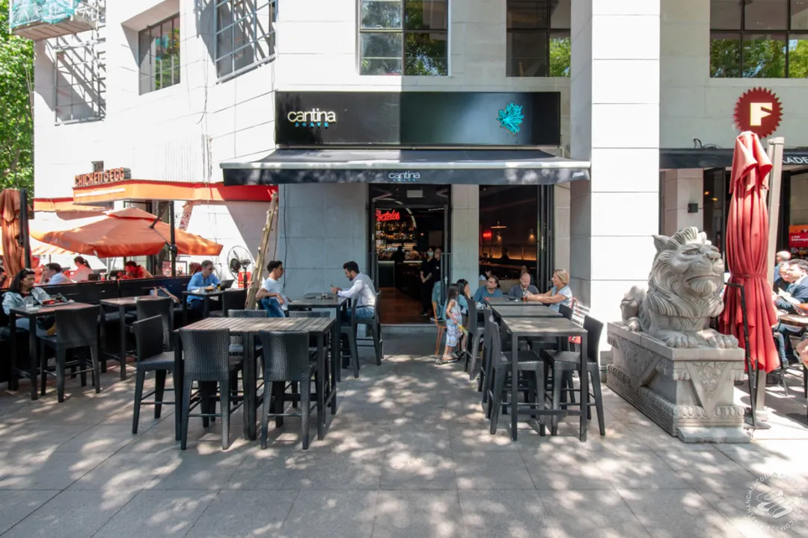
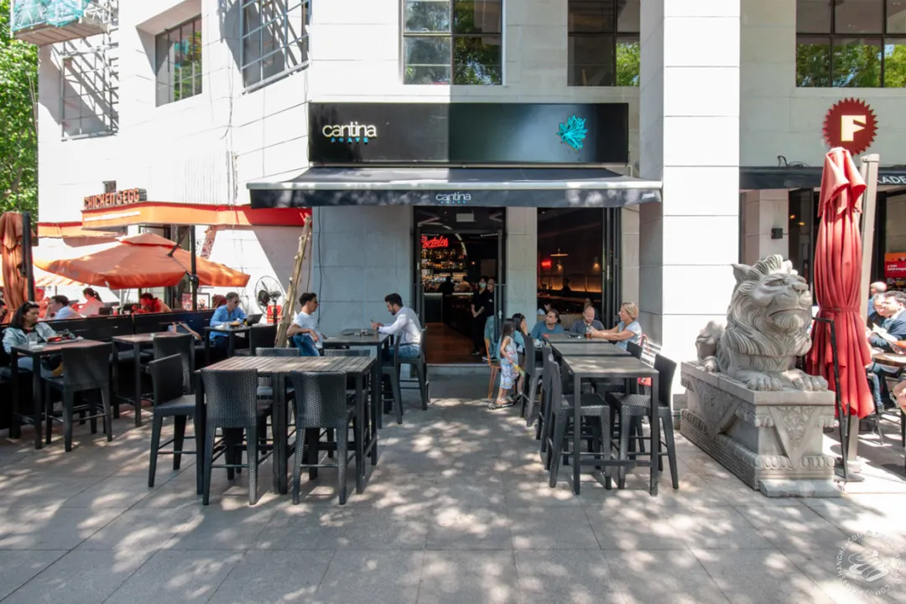
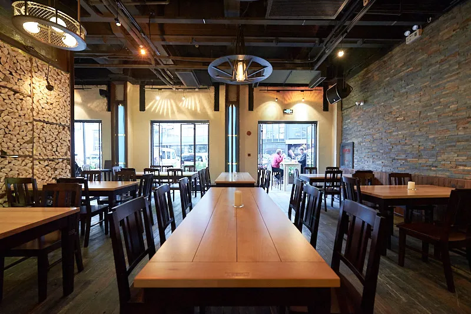
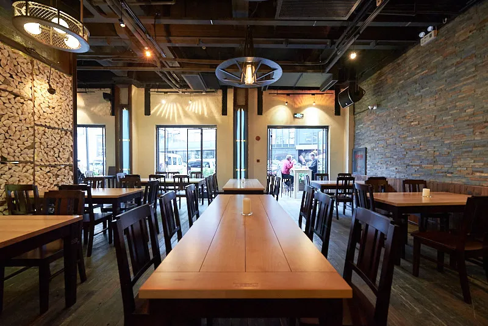

Cantina Agave
 

Location: 291 Fumin road
Price: RMB 100-250 per person
Cantina Agave is a casual Mexican restaurant and bar offering various types of tacos, burritos and tequila. It is
located on the busy street corner and it is always full inside. They open the restaurant on Mon-Sun 11:00 AM-1:00
AM. If you like Mexican food and brunch, you should definitely try this one.
Senso


Location: 119 East Zhaohua Road
Price: RMB 200-300 per person
Senso is a home-style Italian restaurant and pizzeria. They have a beautiful street-side veranda. Their featured
dishes are hand made seafood Tagliolini, Marinated Sardines, Il Ceppo, and Fish Sautte. Senso offers Happy Hour from
2:30pm to 7:30pm, where you can get cocktails, wine, draft beer, and sparkling wine for 35rmb.
Vue


Location: 199 Huangpu Road
Price: RMB 350-500 per person
VUE restaurant atop the Hyatt on the Bund is a elegant and stylish place. You can sit near the window and enjoy the
breathtaking views of both sides of the Huangpu River. It also offers vegetarian friendly and gluten free options.
They have various cooking stations with all you can imagine, bring it to your table once freshly prepared or cooked.
Zeitgeist
 

Location: 537 Haifang Road
Price: RMB 175 per person
Zeitgeist is a Bavarian-style eatery and bar in Shanghai, serving traditional German cuisine. They offer pork chops,
assorted sausage varietals, brotzeit, and fresh draught beer from the barrel.